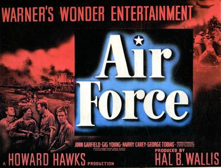

Air Force
Starring: John Garfield, John Ridgely, Gig Young
Director: Howard Hawks
Writer: Dudley Nichols, William Faulkner, Arthur T. Horman
Producer: Howard Hawks, Hal B. Wallis, Jack Warner
Air Force is a 1943 American World War II aviation film directed by Howard Hawks and starring John Garfield, John Ridgely, Gig Young, Arthur Kennedy, and Harry Carey. The film was distributed by Warner Bros. Pictures and produced by Hal B. Wallis and Jack L. Warner.
Trivia
- Won the Academy Award for Best Film Editing.
- Selected for the National Board of Review: Top Ten Films.
- Also nominated for: Academy Award for Best Cinematography, Black-and-White; Academy Award for Best Writing, Original Screenplay; Academy Award for Best Special Effects.
- Development of the film was concurrent with scriptwriting by Dudley Nichols, with some characters based on Air Corps personnel Hawks met while traveling to Washington, D.C., to confer with Arnold and the War Department Motion Picture Board of Review.
- Nichols's script, submitted 15 June, was 207 pages long (twice that of a normal feature-length film), had its initial 55 pages devoted to "character development," and was not finished.
- For water scenes and shooting miniatures shots, MacDill Field, Florida; Randolph Field, Texas; and Santa Monica Bay, California, were used.
Filming Locations
- Randolph Air Force Base
- To that end, miniatures for battle sequences were filmed in May and June 1942, before completion of the script and storyline.
- Principal photography, consisting of aerial shots and exteriors, took place at Hendricks Army Airfield, Florida.
Previous Showings
2 Runs • 1 Festival
Original Billings: 1 run (April 14, 1943)
Original Run: April 14, 1943 (Wednesday - Saturday)
All runs on record (2):
- April 14, 1943 (Wednesday - Saturday)John Garfield, Gig Young
- May 4 - 6, 2012Howard Hawksw/ Only Angels Have Wings